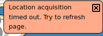

Expedition Oulu
User Guide for v.1.0
User Guide for v.1.0
1. The Application
2. Map View
3. Location Details
4. Guided Tour
5. Navigation Features (GPS)
This application showcases different points of interest around the city center of Oulu. It features a fully interactive map which can display user position if device location services are enabled.
Navigation features for the guided tour are fully functional but application content is still very much in early access.
Map can be scrolled with the thumb on a mobile device, or with scrollbars and mouse wheel inside a browser window. Interactive map elements open a context menu at the top left of the window and they are as follows:
|
Major location with detailed description |
 |
Other point of interest |
 |
Waypoint on the guided tour path |
| User location (upper tip of the triangle) | |


|
Zoom in/out buttons |
User location on the map is updated every 4 seconds. Location and user arrow tips touch when user is at the waypoint.
 |
Return to map or tour |
 |
Location context menu |
Guided tour takes the user along a chain of waypoints. It is possible to start the tour at any point of the route. If you're far away from the city, you can get directions via Google Maps which can be launched from the context menu of any map object.
Navigation bar displays bearing and distance to selected waypoint, as well as user heading.
Left and right arrows select the next waypoint in the chain. It is feasible to follow the route in either direction. If waypoint is located at one of the major locations, the red "Read More" button will appear.
The application is able to make use of device location if enabled and permissions are granted. User position is only handled locally and not stored or sent over the network at any point.
You should see this notification flash at least momentarily. It indicates that location permission has been granted.
The application waits for up to 3 minutes to acquire location and throws an error if it is exceeded. This is not necessarily a cause for concern, as it may take somewhat longer for the device to find the satellites. It is a good idea to activate device location about 5 minutes before loading the application. You can always refresh the page to attempt for another 3 minutes.
If you see this notification, device location is likely turned off or application has not been granted permission. If you want to use the GPS features, verify that device location is turned on. Also, make sure that the browser has access to user location, and you may need to give permission to the application individually as well.
This message indicates a generic error for unknown reasons.
If you manage to ever see this message, you're probably inside a tunnel or there's something wrong with the satellites.